שורדים את אוגוסט בקפריסין 2024
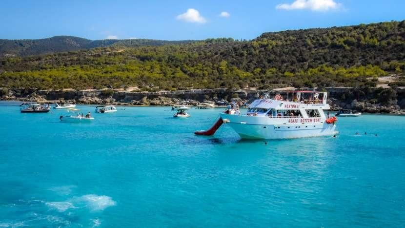
השבועיים האחרונים של אוגוסט הם תמיד הסיוט של כל הורה, אין קייטנות, אין מסגרות, כל מה שיש עמוס וחם פשוט חם נורא! ושלא לדבר על המצב הביטחוני שרק הולך מהפח אל הפחת. איכשהו התחביב שלי של לחפש טיסות השתלם הפעם ונתקלתי בטיסה ממש זולה של וויז אייר ללרנקה, לא חשבתי פעמיים ופשוט הזמנתי. מקסימום יבוטל בגלל המצב הבטחוני…
בגלל ששיא הקיץ, המחירים של המלונות היו בשמיים, התפשרות על מיקום- מחוץ למוקדי התיירות היתה שווה ומצאנו לינות במחיר סביר לכל כיס ובאיכות מעולה- על כך בהמשך.
אנחנו (אני והילדים כמובן, החצי נאלץ להגרר אחרינו) לא אוהבים בטן גב, אוהבים להיות ניידים ועצמאיים. בגלל החום הכבד אופי הטיול הפעם היה יותר רגוע ממה שאנחנו רגילים בדרך כלל. השתדלנו בבוקר לבלות בבריכה ואחר הצהריים לצאת לטייל כי פשוט אי אפשר לטייל בחום של 40 מעלות! הקפריסאים כנראה לא אוהבים מזגנים- איפה שיש הם די חלשים.
לפני שנתחיל קצת מנהלות:
טיסה- כאמור עם וויז, הזמנתי רק עם תיקי גב כי תכלס לא צריך הרבה בגדים לקיץ, אבל בסוף לקחנו טרולי אחד נטו כדי להקל על הסחיבה של תיקי הגב של הילדים. הטיסה בהלוך יצאה בדיוק מופתי, למרות המצב הבטחוני הרעוע שעד הרגע האחרון לא היינו בטוחים שנטוס בכלל כי מלא חברות זרות ביטלו. בחזור בוטלה לנו הטיסה ב-25ֿֿ.8 בגלל מתקפת המנע (פירוט בהמשך) אבך הצלחנו לכרטס לעוד 3 ימים מה שעלה בלא מעט לחץ וחרדה, בסוף גם הטיסה חזור יצאה בדיוק מופתי.
רכב- בקפריסין נוהגים מצד שמאל, וזה כנראה מרתיע המון אנשים מלשכור רכב ולטייל באי וחבל, מתרגלים ממש מהר וזה ממש לא נורא. מי שממש ממש חושש כדאי לשכור אוטומט. שכרנו דרך בוקינג במחיר סביר לגמרי, רכב אוטומטי קטן (בשיא הקיץ לא צריך הרבה ציוד, באנו עם טרולי אחד לארבעתינו).
מלונות- חילקנו את השהיה ל2 איזורים: פאפוס ולרנקה (כי מצאתי דירה מהממת ליד לרנקה, בעוד שהמחירים באיה נאפהֿ או פורטראס היו הזויים).
באזור פאפוס ישנו ב- Aphrodite Sands Resort, שנמצא בעיירה מנדריה (mandria). העיירה נמצאת ממש ליד שדה התעופה פאפוס, ו-10 דקות נסיעה מהעיר, היא לא מתאימה למי שאינו נייד כי מדובר באזור כפרי יחסית. מדובר במלון דירות נופש, נקי מאוד, מטבח מאובזר בכל מה שצריך, בריכה מדהימה. בעיירה עצמה יש כמה טברנות כיפיות לבלות בהם את הערב, וגם חוף ים של מנדריה (לא משהו מיוחד אבל נחמד לראות שם את השקיעה).
בלרנקה ישנו בדירה מדהימה ששכרנו דרך airbnb ממש על חוף הים בעיירה Perivolia הנמצאת 5 קמ משדה התעופה של לרנקה. לינק לדירה: https://www.airbnb.com/rooms/2432992?guests=1&adults=1&s=67&unique_share_id=5657bb17-0494-41ad-959c-775381a9f988
ב25.8 היינו אמורים לחזור אבל בגלל ביטול הטיסות נתקענו לעוד 3 ימים. את הרכב הצלחנו להאריך רק ביומיים אז די נתקענו בלרנקה עצמה, שכרנו דירה ליומיים- Georgiana Suites (דירה נקיה אבל באזור לא משהו של העיר, הדירה לא הייתה נוחה בכלל אז לא ממליצה.
לילה אחרון בילינו במלון- רדיסון בלו להתפנק קצת.
והנה הסיכום המפורט
16.8: טיסת צהריים קצרצרה של 40 דקות והנה אנחנו בקפריסין. נחתנו בלרנקה, אותו גל חום ולחות בלתי נסבלת כמו בארץ. חיכינו לשאטל שיקח אותנו לחברת ההשכרה goldcar שהזמנו דרך בוקינג. קיבלנו רכב נחמד קטן עם בגאז׳ גדול והכי חשוב אוטומט, ויצאנו לדרך לכיוון מערב- פאפוס.
הנסיעה לפאפוס לא ארוכה (שעה וארבעים) אבל אנחנו די רעבים לכן עצרנו במסעדת- Agios Georgios Alamanou Restaurant, שנמצאת קצת לפני לימיסול, ברצועת חוף משגעת עם סלעים לבנים שגולשים לים. בזמן שהזמנו את האוכל הילדודס הלכו לטבול רגליים ולזרוק אבנים למים.
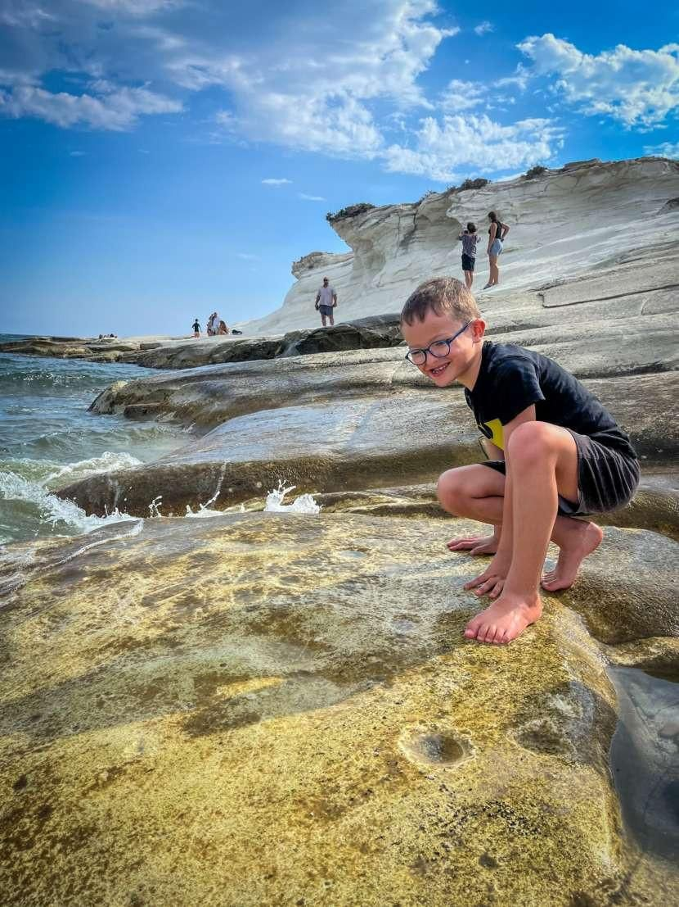
האוכל היה ממש טעים (לא אופייני לקפריסין), במסעדה יש גם פינת מתנפחים מה שהעסיק את הילדים ואנחנו נכנסנו לאט לאט לאווירה של חופש ונתק מהבלגן שבארץ. אחרי האוכל עשינו סיבוב קצר על הסלעים והמשכנו בנסיעה עד סניף lidl בכניסה ללימיסול בכדי להצטייד במצרכים בסיסיים לדירה ֿ(כדי שיהיה משהו לנשנוש ערב וארוחת בוקר).
ֿככל שאנחנו נוסעים מערבה אנו זוכים לראות שקיעה משגעת על פני נופי קפריסין (שדומים מאוד לרמת הגולן אצלנו ביום קיץ לוהט).
למלון שלנו בעיירה מנדריה הגענו בשמונה בערב, עייפים ומרוצים. פגש אותנו הנציג של המלון, שהראה והסביר הכל והיה מאוד נחמד. כאמור מדובר במלון דירות נופש, בלי רעש ומסיבות, מושלם למשפחות. קיבלנו דירת 2 חדרי שינה וסלון עם שני שירותים ומקלחות ומטבח מאובזר בכל טוב ומרפסת ענקית הצופה לבריכה. במנדריה עצמה יש כמה טברנות נחמדות אבל היינו שבעים מהארוחה, נתנו לילדודס להשתולל בדירה ולישון. אנחנו ישבנו עם בירה במרפסת וצפינו במטוסים שעוברים ממש מולנו בדרכם לשדה התעופה של פאפוס לנחיתה.
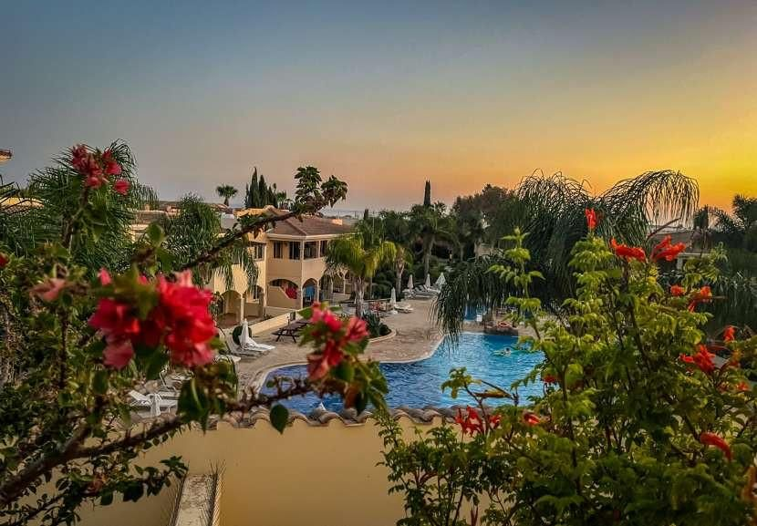
17.8- בוקר ראשון של חופש. מה עושים כשחם נורא? או קמים ממש מוקדם ומטיילים כדי להמנע מהחום, או נכנסים למוד בטן גב. מודה שממש קשה לי עם זה אבל החום ניצח גם אותי, כך שלקחנו את הבוקר באיזי, שלחנו את הילדודס לבריכה למטה לתפוס לנו מקום ובילינו את כל הבוקר בבריכה הנעימה מאוד. לקראת הצהריים נסענו להצטייד בעוד מצרכים, וגילינו שבעיירה יש סופר מעולה שיש בו הכל! מצעצועי ים בריכה לקצביה ומעדניה, אם היינו יודעים הייינו מוותרים על העצירה בלידל בלימיסול.
אחרי מנוחת צהריים בדירה יצאנו סוף סוף לטייל- לחוף אפרודיטה. מספרים שמדובר באחד החופים היפים ביותר בקפריסין, אז מספרים. מספרים גם שלפי המיתולוגיה היוונית האלה אפרידיטה נולדה שם מקצף הגלים.
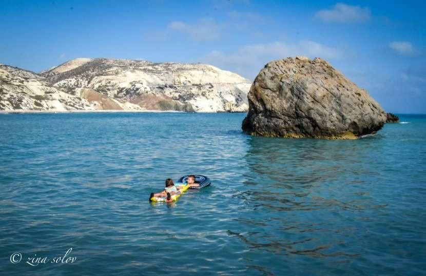
נסענו 15 דקות ממנדריה, חונים בחניה מעבר לכביש, ויורדים במדרגות אל מנהרה מתחת לכביש שמובילה ממש לחוף.
ה״יופי״ של החוף זה הצוקים הנישאים מהמים. אני לתומי חשבתי שהחוף יהיה דומה לחופים היווניים- עם מים צלולים ושקופים, בפועל לדעתי חוף פלמחים בארץ הרבה יותר יפה. החוף סלעי (שזה סבבה כי לא נכנס חול) אז קחו נעליים. אבל המים היו ממש אכזבה, לא שקופים כלל (קרקע חולית) ומלא אצות ודשא ים (איכס). אין שורותי הצלה לידיעתכם וזה בעצם לא חוף מוכרז, תביאו שמשיהֿ ומגבות. הילדודס חנכו את מזרוני הים שלהם ונהנו מכל רגע, אנחנו פחות, תכננו להישאר ולראות את השקיעה אבל אחרי שעה ממש מיצינו וחזרנו לבריכה של המלון שהרבה אבל הרבה יותר נעימה ומפנקת. את השקיעה ראינו מהבריכה.
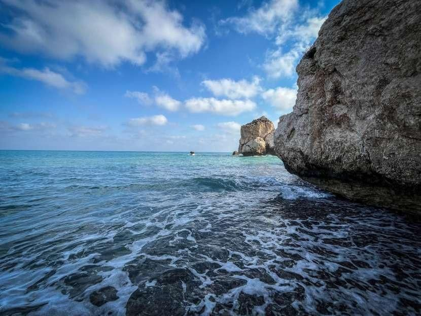
לארוחת הערב החלטנו לנסות את אחת מהמסעדות שבעיירה, הליכה קצרצרה מהמלון ואנחנו בכיכר הראשית, מבחר ״עצום״ בין 3 טברנות ומסעדת פיש וצ׳יפס, אם כי אווירה ממש תוססת וחיה עם מוזיקה בכל טברנה, ממש אווירה שמחה. התיישבנו לאכול, סתם שתדעו שבקפריסין אין באמת אוכל אותנטי משלהם, הכל פיוז׳ן של הכל מהכל- היה תפריט אסייתי של סושי ואגרולים, יחד עם תפריט בשרי וים תיכוני וכמובן פיצה פסטה. מצד שני יש להם זמן והם לא ממהרים בכלל, אז קחו בחשבון שיקח הרבה זמן עד שהמנות יגיעו, אז אל תגיעו רעבים או עייפים מידי (לקח לעצמנו לפעם הבאה אחרי שהילדים כמעט נרדמו על השולחן). באופן מפתיע הסושי היה אכיל (או שאני הייתי מורעבת), הילדים נהנו מפיצה והחצי מסטייק טוב. מזל שהמלון נמצא במרחק של 5 דק הליכה אחרת היינו סוחבים את הילדים על הגב.
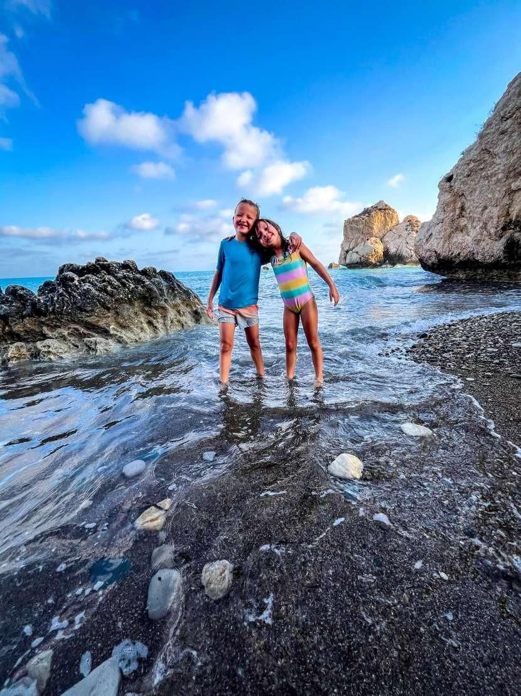
18.8- הבוקר מתחיל בנוהל הקבוע שסיגלנו כאן, שולחים את הילדים לתפוס מקום בבריכה ולהצטנן במים עד שאני מכינה ארוחת בוקר, אחרכך כולנו יורדים לבילוי בבריכה. מנוחת צהריים בדירה ובערב כשהחום הופך מבלתי נסבל לנסבל בקושי יוצאים לטייל.
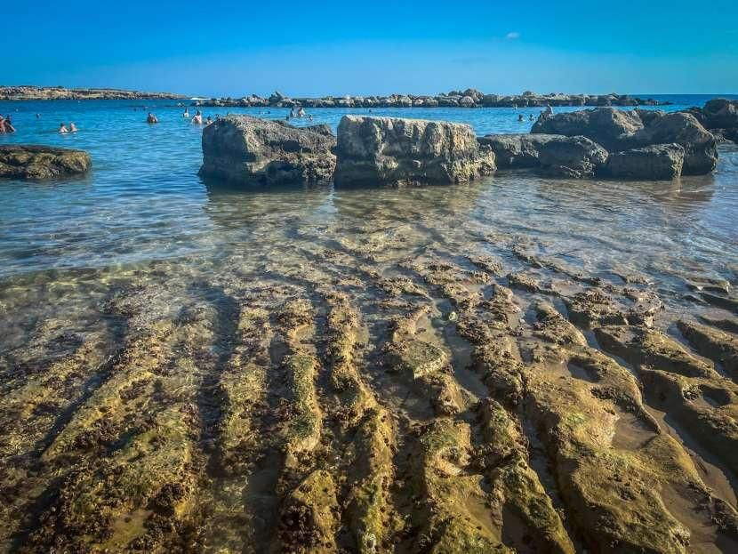
הפעם בתוכנית לטעום מעט מחופי מערב קפריסין, אז אנחנו נוסעים לכיוון חוף coral bay, שעה נסיעה מהדירה שלנו. קראתי שהקורל ביי די עמוס כדאי ללכת לאחיו הקטן יותר חוף Laourou Beach. גם הוא חוף מאוד הומה אדם, אולם מאוד מסודר ובשביל שני כסאות שיזוף ושמשיה תשלמו 7 יורו. הגענו לשם בארבע אחר הצהריים והצלחנו בקושי רב למצוא מקום. החוף מציע שירותי הצלה, מסעדה, ספורט ימי- אין פלא שהוא שורץ בריטים. המים די רדודים, יש סלעים שאפשר לטפס עליהם ובגדול כיפי מאוד לילדים. אולם גם פה הוא ממש לא צלול ומלא אצות במים. אגב בשנירקול אין בכלל דגים, רק אצות. גם פה אנחנו מבלים כשעה וחצי עד שנמאס לנו וממשיכים לעצירה הבאה- תצפית על הספינה הטבועה אדרו וו.
מדובר על ספינה אלבנית שעלתה על שרטון בשנת 2011 ומאז ״עוגנת״ לחופי מערב קפריסין כמו אטרקציה. שימו לב שאין חניה מסודרת אלא חונים בצידי הכביש ליד מסעדה ממש נחמדה המשקיפה על הספינה (צריך להזמין מקום מראש אם אתם רוצים לאכול שםֿ, לצערנו לא הצלחתי להזמין מקום- היה לעוד 3 ימים קדימה). כדאי להגיע ולראות את הספינה בשקיעה מחזה מרשים, אם כי אל תקצו לזה הרבה זמן כי אין באמת מה לעשות שם חוץ מלראות אותה, אלא אם אתם מספיק אמיצים לקפוץ למים המאוד מזמינים (והעמוקים), האיזור ממש מזכיר את חוף ראש הנקרה עם מערות חצובות בצוקים.
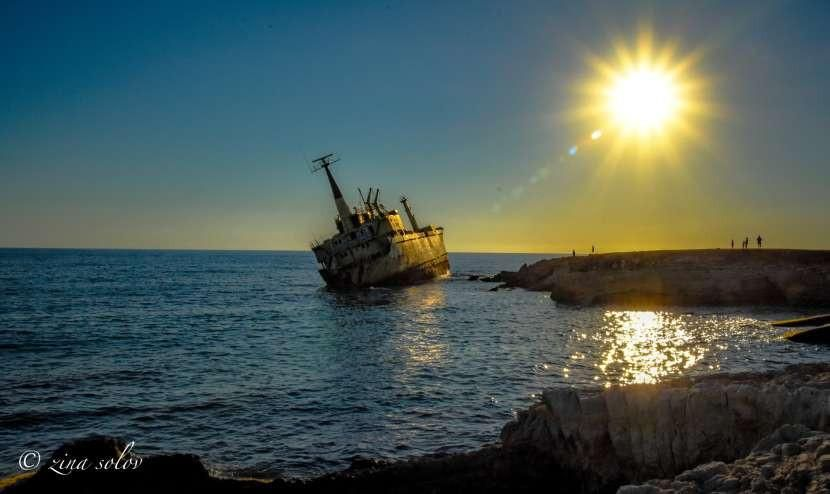
היות והשעה כבר כמעט שבע בערב החלטנו לאכול ארוחת ערב באחת מהמסעדות באיזור, וכך בחיפוש מהיר בגוגל מצאתי מסעדה שנראתה ממש סבבה ולא רחוקה- PORTO ANTICO RESTAURANT. מסעדה עם חניה, טרסה נעימה המשקיפה לים, צוות אדיב ואוכל ממש ממש טעים, אמנם לא זולה בכלל, אבל אם כבר הבנתם בקפריסין האוכל במסעדות לא משהו אז מפתיע שככה יומיים ברצף פגענו במסעדות טעימות ממש (רמז- זו היתה הפעם האחרונה שהמסעדה היתה טובה). יצאנו משם לקראת תשע בערב, כבר חשוך ויש לנו שעה נהיגה. האמת הכבישים הראשיים בקפריסין ממש מצויינים ואין חשש כלל לנהוג בחושך. התחלנו בנסיעה ובפאתי פאפוס נכנסנו לפקק שלא דמיינו בחיים! לא יודעת למה (חסמו כביש מסויים והפנו את התנועה לכביש אחר) בכדי לברוח מהפקק היינו צריכים לנסוע דרך שכונות וכפרים לא ידועים, כל שניה פניות, ועדיין לא משנה לאן נסענו נתקענו בפקק אחר. לקח לנו כמעט שעתיים לחזור למנדריה למלון, הילדודס נרדמו כבר באוטו, וכך אפשר להכתיר את בעלי לאלוף הנהגים שהשלים את הכשרתו גם בנהיגה בכפרים בחושך בצד שמאל!ֿ
19.8- גם את הבוקר התחלנו בנוהל בריכה קבוע, אולם היום יש שינוי קטן בתוכנית, היום נוסעים ללגונה הכחולה. הלגונה הכחולה נמצאת בצפון מערב האי בשמורת האקאמאס, ניתן לטייל במקום עם ג׳יפ או לחלופין לקחת שייט של 40 דק מנמל לאטצ׳י.
אחרי ארוחת צהריים מוקדמת וזריזה בדירה אנחנו יוצאים לכיוון העיירה לאטצ׳י. בדרך חוצים את רכס הרי הטורודוס ומתפעמים מהנוף היפיפה. העיירה לאטצ׳י היא עיירת חוף טיפוסית ורואים שהסיבה העיקרית להגיע לשם היא שמורת האקאמס ושייט ללגונה. מלא ג׳יפים להשכרה ושפע מבחר של ספינות בנמל. הרוב המוחלט של ההפלגות יוצאות באותם הזמנים- עשר בבוקר, שתיים וחמש אחר הצהריים. לא צריך להזמין מראש, פשוט להגיע לנמל ולבחור את הספינה שתרצו לשוט בה. ניתן להשכיר סירה עצמאית, ניתן לקחת שייט מאורגן על ספינה גדולה יותר עם מגלשות מתנפחות לים. העלות בין 50-60 יורו (תלוי ברצון שלהם למכור כרטיס).
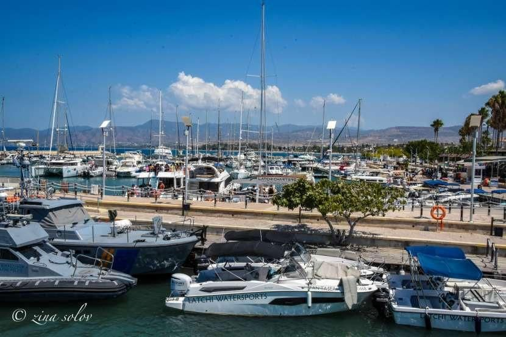
בחרנו ספינה ואת החצי שעה עד ההפלגה שוטטנו בנמל המלא מסעדות וחנויות תיירים, החוף של לאטצ׳י גם לא מזמין- מלא אצות.
ברבע לשתיים עלינו על הסיפון, בספינה יש שירותים ובר, במהלך ההפלגה קיבלנו לימונדה, הצוציקים נהנו להתרוצץ על הסיפון. לאחר 40 דק נכנסנו ללגונה, היא אכן כחולה! מים בצבע טורקיז משגע, סוף סוף ים כמו שדמיינתי, נקי צלול ופשוט מזמין שחיה. על הסיפון יש מסיכות שנורקל, נודלים ואפודי הצלה למי שרוצה, והצוות ממש שירותי ועוזר. אני והילדודס הלכנו מיד להתגלש מהמגלשה המתנפחת ישירות לים, כיף אדיר! משם קפצנו מהסיפון לשחיה במים נעימים ממש, שנירקלנו (אולם ללא דגים), בקיצור חוויה שווה וכיפית בטירוף. לאחר כשעה של שחיה במים (וכמה התגלשויות וקפיצות) מפליגים חזרה לנמל. בסה״כ לשריין כ-3 שעות פעילות.
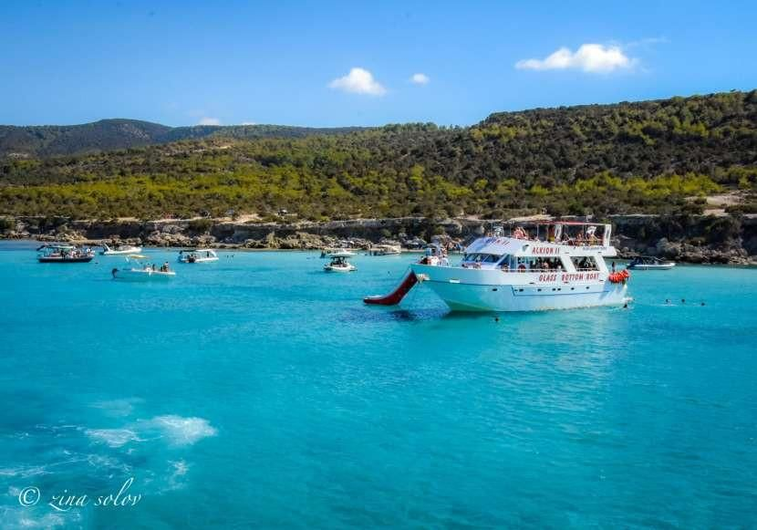
התלבטנו אם לאכול בנמל אבל לא היינו רעבים והעדפנו לעצור היכנשהו בהרים ולהנות מהנוף. וכך התחיל לו החיפוש אחר עגלת קפה או מסעדה עם נוף, חיפוש שהסתיים בעיירה חמודה עם כנסיה וקפה מזעזע!ֿ
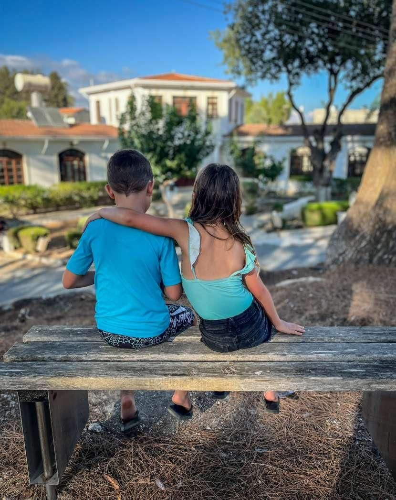
הגענו למנדריה לקראת השעה שש בערב והחלטנו בספונטניות לבדוק את החוף של העיירה. האמת הגענו בשעה מושלמת לשקיעה, הצוציקים השתוללו על החוף הסלעי, ואנחנו נהננו משקיעה רומנטית. החלטנו לוותר על ארחות ערב בטברנה ולהכין לנו פיצה ביתית לסיום של יום מוצלח.
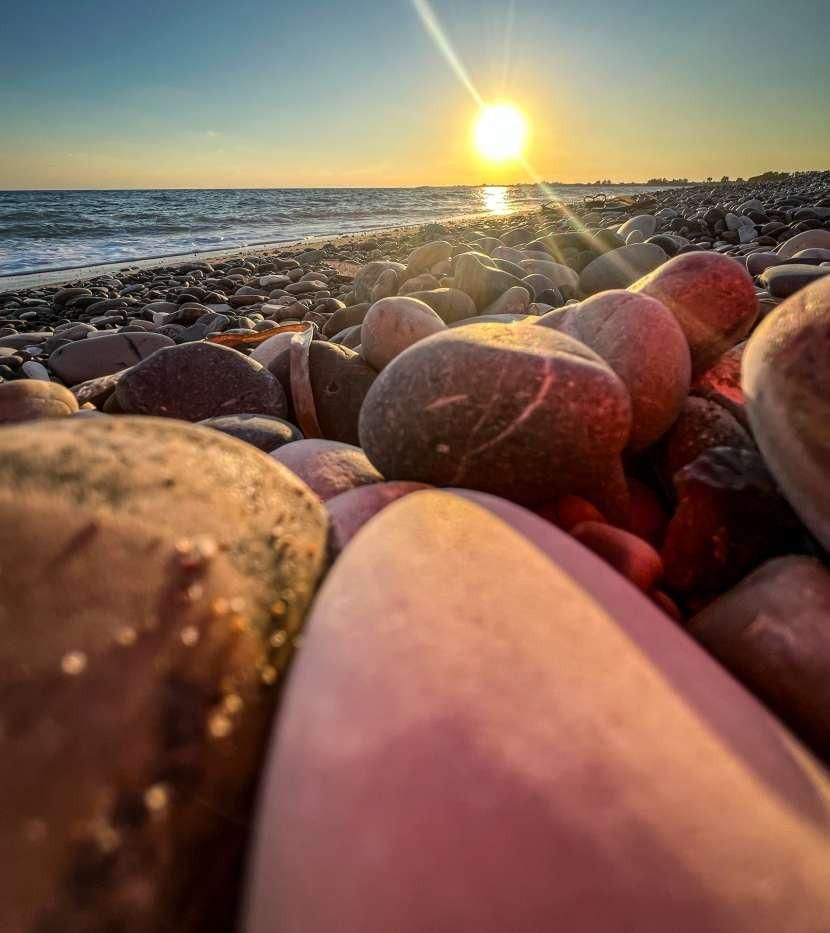
20.8- את הבוקר העברנו במלון ובבריכה ואחר הצהריים יצאנו לטיול היומי, הפעם לטייל קצת בנמל פאפוס.
החלטנו לוותר על אטרקציות מפורסמות כמו מפלי אדוניס- קראתי שהכביש לשם מזעזע וכן המחיר ממש יקר- 15 יורו למבוגר ו-9 לילד בשביל בילוי של גג שעה שעה וחצי, הרגיש יותר כמו מסחטת כסף אז ויתרנו. גם על פארק המים אפרודיטה ויתרנו למרות ששמענו עליו דברים טובים, פשוט לא רצינו לבלות יום שלם עם צרחות של ילדים מתרוצצים במים- יש את זה גם בארץ תודה רבה.
וכך אחרי יום שלם של בטן גב, יצאנו לנמל. נסיעה של רבע שעה בלבד ממנדריה והגענו לפאפוס, ליד הנמל יש פארק עתיקות ענקי שנראה מאוד מעניין ומזמין, אבל עדיין חם מידי ואנחנו מוותרים. הסוד בלמצוא חניה בנמל (חינם) היא פשוט להגיע מוקדם יחסית, הגענו בחמש כך שזה עוד לפני ההמונים שמגיעים לטייל בערב והיה לנו שפע חניה. נמל פאפוס מתוייר כמו כל טיילת בעיירת נופש, גלידריות מסעדות גזלנים, התרשמנו קצת מהספינות שמציעות הפלגות שונות, נכנסנו למצודה הקטנה והמשכנו לשוטט על שביל הטיילת עד לנקודה המערבית ממנה רואים את השקיעה. הטיילת ענקית, מושקעת ובריזת הערב ממש מנעימה את האווירה. ניתן להמשיך עד המגדלאור אבל עצרנו בנקודת השקיעה. בעלי שם טיים לאפס לצילום ואנחנו זכינו לראות שקיעה מדהימה, אם כי החוף ממש מזכיר את פלמחים בארץ. את ארוחת הערב אכלנו במלכודת התיירים, במסעדת השקנאי - pelican, כמה הופתענו לראות שקנאי אמיתי משוטט ברחבי המסעדה, פרט לשקנאי שהנעים את האווירה המסעדה תיירותית ולא טעימה כלל.
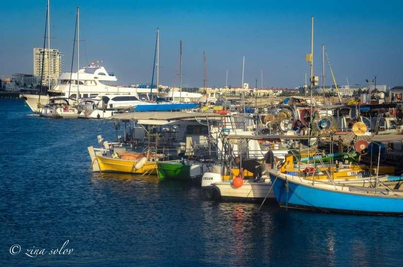
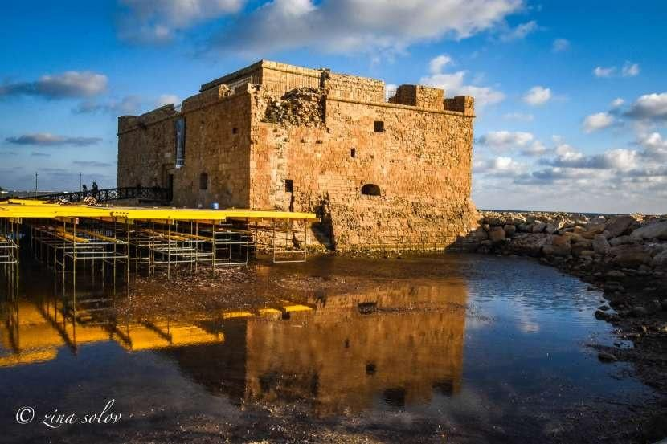
21.8- היום אנחנו עוזבים את אזור פאפוס ונוסעים דרך הרי הטרודוס לוילה שהזמנו ליד לרנקה. הרי הטורודוס הם הגבוהים בקפריסין, ובחורף משמשים גם לסקי. התחלנו את הטיול בעצירה ליד סכר Asprokremmos Dam סכר ממש מרשים שנמצא סמוך לעיירה מנדריה. יש במקום פינות פיקניק ותצפית יפה מהגשר.
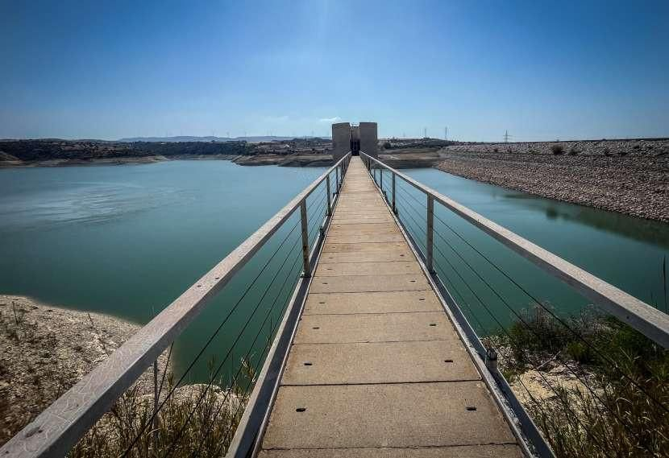
משם המשכנו לכיוון ההרים, לעצירה הראשונה שלנו ב-Rock of Chasampoulion. מדובר על סלע ענקי ומרשים ממש על הדרך אבל גולת הכותרת זה הנחל שזורם לצידו. חונים בצד הדרך (יש חניה קטנה בצידי הכביש) ויורדים למטה לכיוון העצים, מיד מתגלה פינת חמד, נווה מדבר מוצל, נחל עם מים קפואים ועצים בכל מקום. אין נפש חיה ורק אנחנו, שקט וציוץ ציפורים. בחום הזה לשכשך במי הנחל זו חוויה מדהימה.
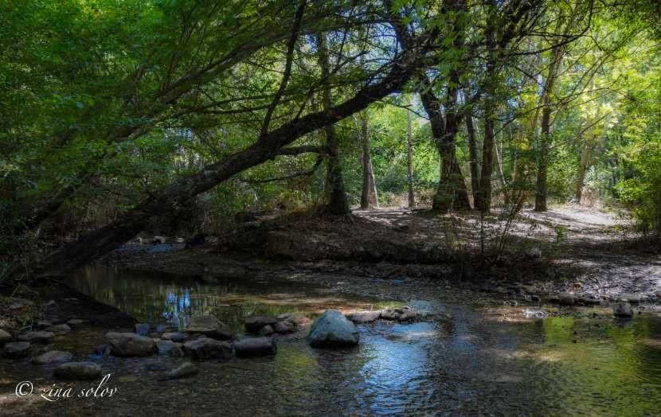
משם המשכנו לכפר המפורסם אומודוס, הדרך אל הכפר עוברת גבוה בהרים, בין מטעי ענבים ויקבים משפחתיים, נופים משגעים. ממש חבל שלא עזרנו באיזה יקב לטעימות יין אבל עם הילדים זה טיפה מאתגר. בכניסה לכפר אומדוס יש חניון ענקי (ואפילו שירותים), חנינו ויצאנו לטייל בין סמטאות הכפר הקטן.
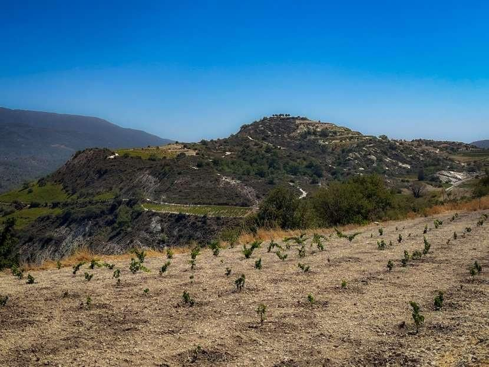
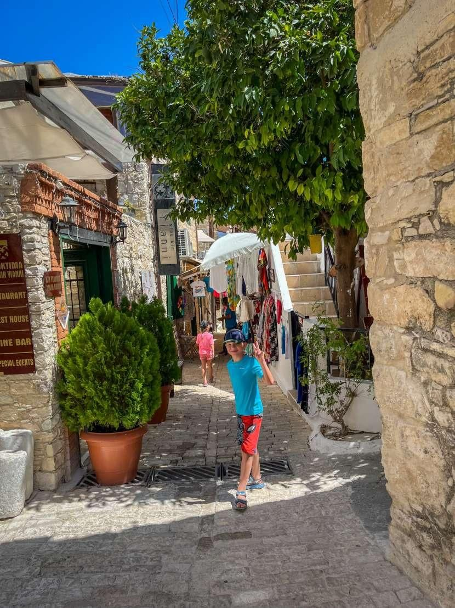
למרות שהוא יחסית גבוה יותר בהרים עדיין חם נורא ופיצקה ממש סובלת מחום כך שהטיול לא היה ארוך אבל עשינו הפסקה לנשנוש גלידה ולימונדה במרכז הכפר.
הרי הטרודוס מפורסמים גם בזכות מפלים משגעים ושבילי הליכה מדהימים בטבע, לשבילי הליכה חם מידי עכשיו באוגוסט, אבל טבילה במפלים מתאימה בהחלט. בהתחלה רציתי לנסוע למפל Chantara Waterfall קראתי שהוא יחסית פחות מתוייר, אבל בגלל שהקילומטרים האחרונים הם בדרך עפר מפותלת החלטנו לוותר ולנסוע למפל הכי מתוייר בערך בהרים- Millomeris Waterfall. המפל נמצא ליד הכפר פאנו פלאטס שנראה ממש מזמין לטיול גם כן. שימו לב יש 2 דרכים להגיע למפל, הראשונה היא דרך הכפר, משם יש הליכה של כחצי שעה בירידה בחורש יפיפה לשפת הנחל, אולם בחום הזה העדפנו את האופציה השניה שהיא להקיף את הכפר ולהגיע מכיוון כביש b8, כשאתם עם הפנים דרומה תהיה פניה חדה ימינה ושלט שמצביע למפל. בכביש הזה סלול ומוביל ישר לפינת חניה 5 דקות הליכה קלילה מהמפל. שימו לב המפל מתוייר ולכן תתכוננו להרבה אנשים. חנינו טיפה רחוק יותר כי החניה היתה מלאה והלכנו 7 דקות בדיוק עד המפל. ממש לפני הירידה למפל יש מסעדונת קטנה וממש לידה יש את המדרגות שמובילות למפל. מדובר על מפל יפה עם בריכה של כמטר וקצת שניתן לשכשך בה, אבל המים פשוט קפואים. אני והצוציקים היינו אמיצים ונכנסנו לטבול בבריכה, הצוציקים אפילו צללו לתוך המים.
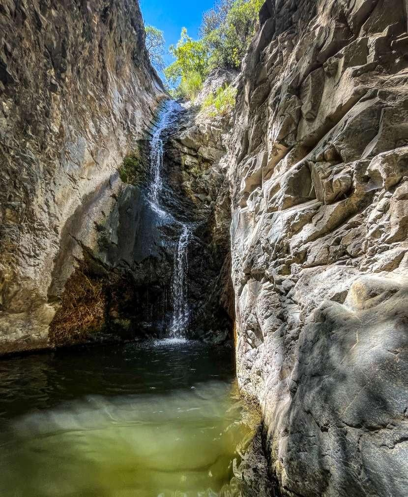
אחרי שהתקררנו כמו שצריך נסענו לאטרקציה לילדים- פארק החבלים ספארטי שנמצא ממש בעיירה פאנו פלאטס. מדובר בפארק חבלים גדול ומרשים שלא נופל מפארקים אחרים שהיינו באירופה. יש 6 מסלולים לפי צבעים שמותאמים לגילֿ וגובה. הצוציקים יכלו לעלות למסלול הכתום והסגול (אם היינו מתעקשים היו יכולים גם כסוף שכבר כולל אומגות) אבל החלטנו שאין לנו כוח להיות שם יותר מידי זמן אז שיסתפקו במסלולים הקלים יותר שהיו יחסית קלים להם אבל מאוד מגוונים. אחרי כשעתיים גם לצוציקים נהיה חם כך שהיה יחסית קל לשכנע אותם להמשיך הלאה.
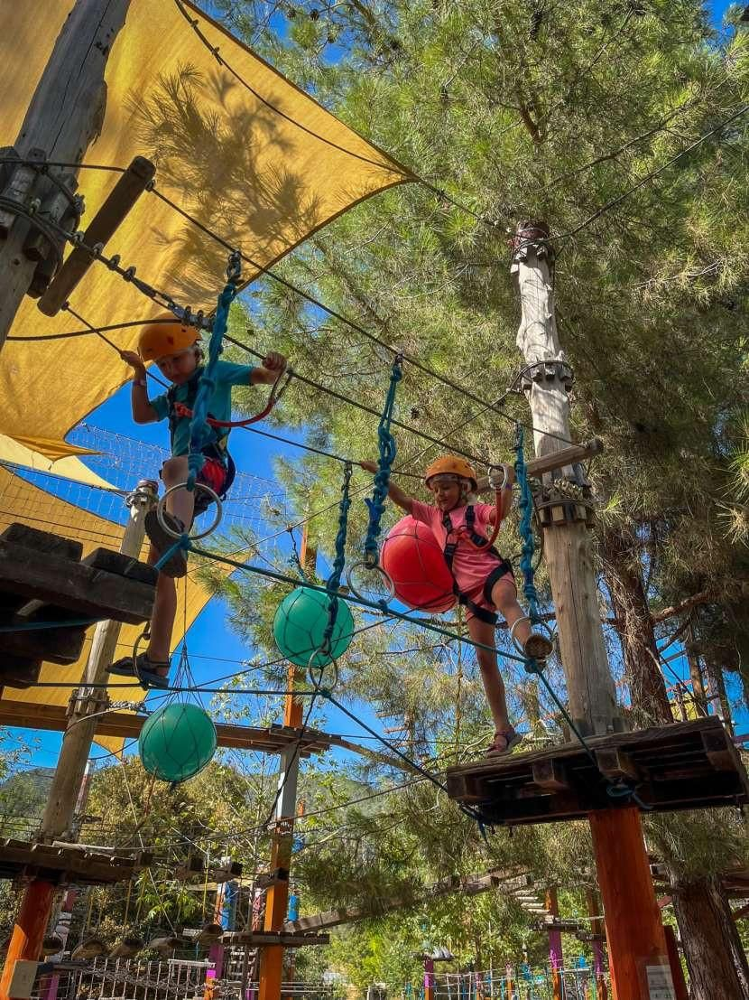
אם אנחנו כבר בטורודוס החלטנו לחפש איזשהיא תצפית נוף יפה וכך עלינו כמעט עד הפסגה (הר האולימפוס- כמו ביוון), ליד שביל ארטמיס. כאן ממש מרגישים הקלה בעומס החום, עם אוויר צח ובריזה. לא היה לנו זמן לעשות מסלול הליכה, אבל במקום הוקם מעיןן מרכז תיירות, יש חנויות מסעדות ופארק שעשועים לילדים. טיילנו טיפה סביב המרכזון (שבחורף האיזור הוא אתר סקי), אכלנו ארוחת צהרים מאוחרת באחת המסעדות (לא היה טעים בכלל אז לא ממליצה). השעה כבר ארבע אחר הצהריים ויש לנו עוד שעתיים נסיעה עד הדירה שלנו בפרבוליה שליד לרנקה, כך ששבעים ומרוצים עם טעם של עוד עזבנו את הטרורודס. אם יש מקום שבטוח נרצה לחזור אליו בקפריסין זה הרי הטורודוס והמסלולים המדהימים שניתן לעשות שם בעונה פחות חמה.
הנסיעה עברה בנעימים, הכבישים המהירים בקפריסין ממש טובים כך שהנסיעה זורמת בלי בעיה. העיירה פרבוליה והעיירה קיטי נמצאות ממש ליד שדה התעופה של לרנקה, עצרנו במינימרקט קטן להצטייד בדברים בסיסיים שיהיה לנו לבוקר ומשם ישר לדירה.
הבית נמצא בקומפלקס בתי קרקע ממש על החוף של פרבוליה, מהגינה לים יש אולי 15 מטר… הדירה מרווחת (מתאימה ל-4) יש שני חדרי שינה למעלה, מקלחת ומכונת כביסה ומרפסת מקסימה לים. למטה יש מטבח גדול ומאובזר פינת אוכל וסלון וכן עוד שירותים ומקלחת קטנים. הגינה ענקית עם מיטות שיזוף וגריל. אם היה שם סאפ או קיאק בכלל היה מושלם. מצד שני רואים שהבית נטו להשכרה ולא הכי מתוחזק וחדיש. צוציקים מיד רצו לטבול רגליים בים, אכלנו ארוחת ערב קלילה ולישון.
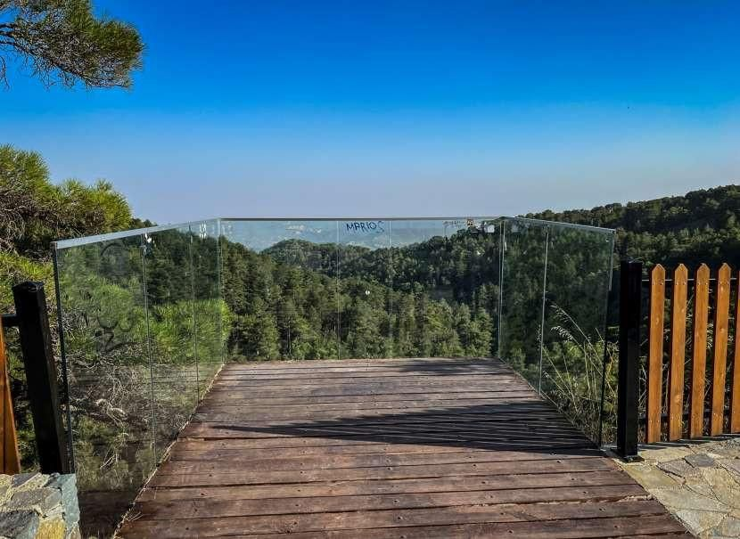
22.8- יום הבטלה. היות שבעלי תמיד טוען שאנחנו מגיעים למקומות לינה מדהימים ולא נהנים מהם אלא רק נוסעים לכל מקום החלטתי לפרגן לו ביום בטלה. מיד לאחר ארוחת בוקר מיקמנו את מיטות השיזוף בקצה הגינה (3 צעדים מהים) ובילינו את הבוקר בשחיה בים (הים בדיוק כמו אצלנו בארץ, גם פה הוא לא צלול ושקוף כמו ביוון). בצהרים יצאנו לקניות בסופר גדול שבעיירה קיטי, שם הצוציק החליט שהוא רוצה שיכינו לו תמנון (אחרי שראה תמנון במעדניה בחנות), תמנון לא קנינו אבל דגים טריים כן! אין כמו דגים על האש תוצרת עצמית (כמעט).
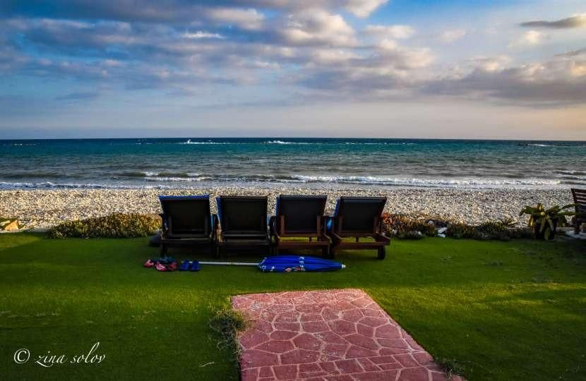
בשעה ארבע כבר לא יכלתי לסבול את הוילה, וגם הילדים ביקשו גיוון אז נסענו לחוות הגמלים (Camel Park) שנמצאת כרבע שעה נסיעה מהוילה (רבע שעה זה לא נחשב טיול). הכניסה לא יקרה- 7 יורו למבוגר ו-5 לילד. במקום יש חווה גמלים, למורים, חמורים שניתן להאכיל (קונים שקית אוכל בכניסה) יש גם מתקני שעשועים לילדים, והשוס- בריכה. יש גם מסעדה וקיוסק במקום. העברנו במקום כשעתיים בהאכלת גמלים, משחקים ושחיה בבריכה, עייפים ומרוצים חזרנו לוילה לעל האש איכותי לארוחת הערב.
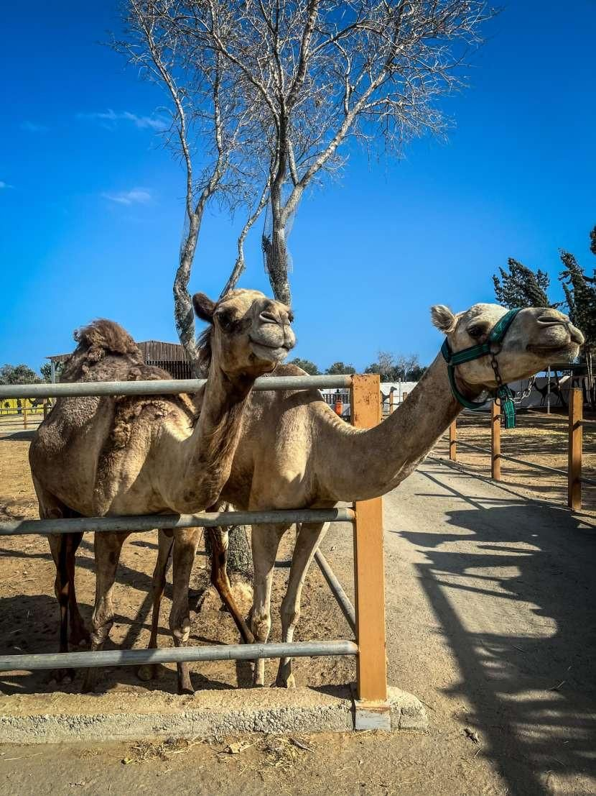
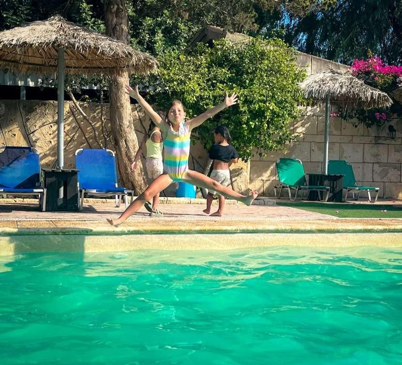
23.8- גם את הבוקר פתחנו בשחיה בים ובסטלבט בוילה. אחר הצהריים נסענו לטיול בקייפ גרקו שבאיה נאפה. קייפ גרקו היא הקצה הדרום מזרחי של קפריסין. הנסיעה לאיה נאפה מפרבוליה לקחה כ-40 דקות בכביש מצויין.
העצירה הראשונה שלנו היתה בגשר האהבה שבפאתי איה נאפה, מדובר בקשת מרשימה שנחצבה ע״י הגלים וניתן לעלות עליה (לא עשינו בכל זאת אנחנו עם הילדים).
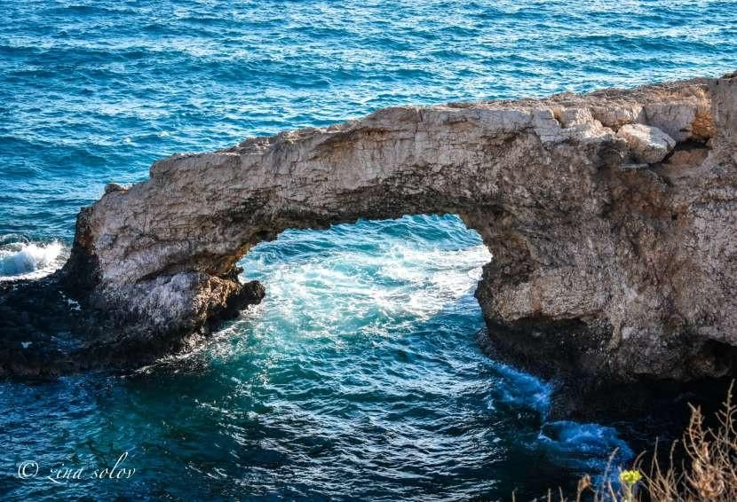
משם, במסגרת החיפושים שלי אחרי חוף ״יווני״ (עם מים צלולים ושקופים) הגענו לחוף הקטן- Ammos Kambouri Beach, סוף סוף, נמצא החוף! חוף פצפון, בין סלעים, מים שקופים עד שרואים את הדגיגים ששוחים. בכלל הצד של איה נאפה ופורטראס זה הצד עם המים השקופים והצלולים כמו ביוון. אחרי רחצה קצרה המשכנו הלאה בטיול שלנו, ובעצם נכנסנו לתוך שמורת קייפ גרקו.
השמורה ענקית, אפשר לטייל בה באופניים (אבל חם) אפשר עם רכב, יש מלא מלא מקומות לתצפית. תכננתי לבקר בתצפית על מערות הים, הלגונה הכחולה של איה נאפה, הכניסה והמערה הסמוכה ואולי גם לקפוץ לחוף קונוס המפורסם. בפועל לא הספקנו הכל. מיד אחרי הרחצה בחוף נסענו ללגונה הכחולה כי השמש התחילה כבר לשקוע. היתרון- לא חם ואין הרבה אנשים, החסרון- לא רואים את הצבע הטורקיזי המשגע של המים, הם נראים פשוט כחולים בשעה הזו (כחול ספיר). זה לא הפריע לי ולצוציק לקפוץ למים העמוקים לטבילה נעימה. ליד הלגונה יש גזלן, עם שייקים מעולים גלידות וכו. הספקנו לקנות גלידות ממש דקה לפני שסגרו את המקום ואז ישבנו על הספסל המשקיף ללגונה וראינו את המפרץ המהמם.
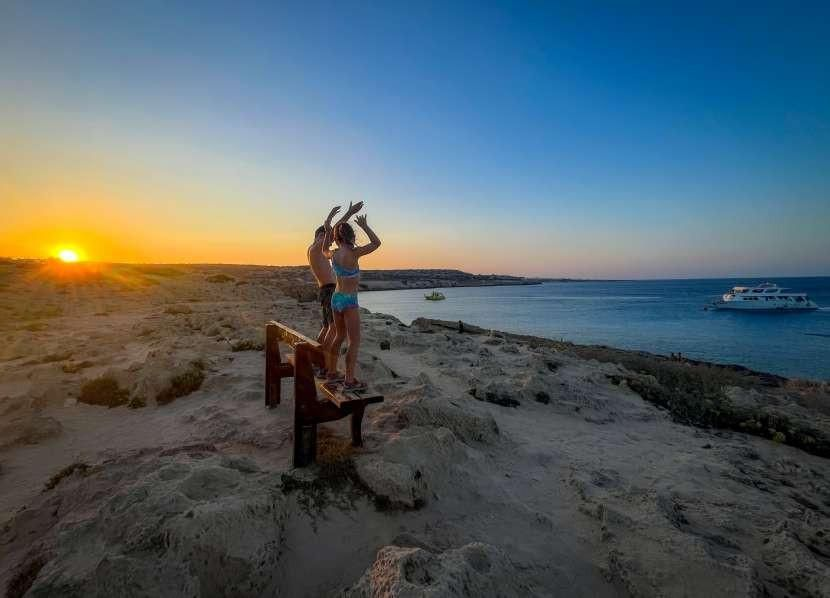
בשלב מסוים המוזיקה מספינות הקרוזים הגיעה עד אלינו, הצוציקים עלו על הספסל והתחילו לרקוד. מהלגונה נסענו 2 דקות עד לכנסית Ayioi Anargiroi Church, כניסה קטנה ויפה המשקיפה על המפרץ. באותו הזמן היה גם טקס חתונה בכנסיה. ממש מתחתיה יש את מערת Zangooly cave, מערה מקסימה שממש ניתן לרדת אליה, אנחנו הסתפקנו בתצפית מהגשר. וזהו מהר מאוד השמש שקעה ואת הנסיעה חזרה עשינו בחושך. כמובן שאפשר להישאר לבילוי באיה נאפה אבל בכל זאת הצוציקים כבר היו מותשים. עוד יום מוצלח הגיע לסיומו.
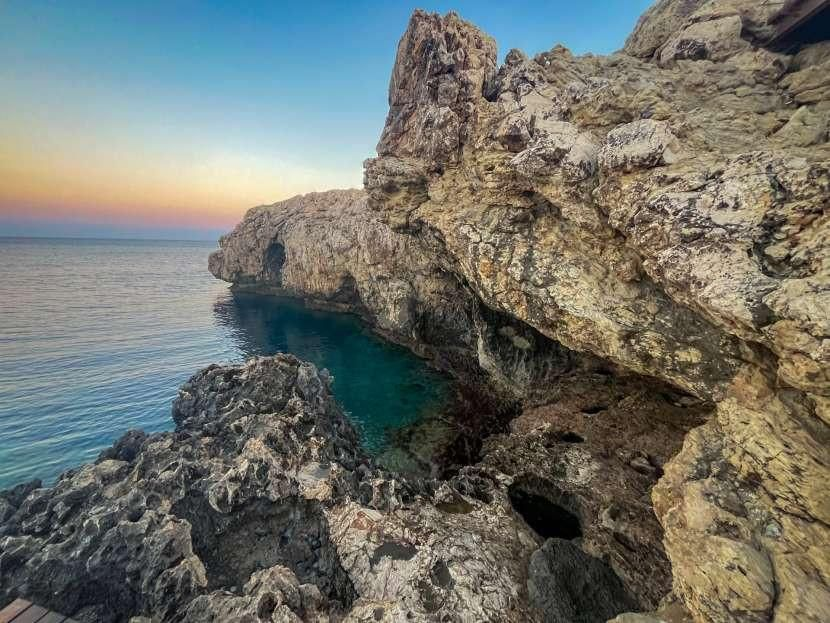
24.8- היום האחרון שלנו בקפריסין, מחר טסים חזרה (או כך חשבנו). בגלל שכלכך הנננו בהפלגה ללגונה הכחולה בלאטצי, הזמנו גם הפלגה מאיה נאפה בצוללת הצהובה- Yellow Submarine. יש 3 הפלגות: בעשר בשתיים ובחמש. שימו לב שהים בחלק הדרומי של קפריסין (ואיה נאפה) מאוד גלי אחר הצהריים אז אם יש לכם מחלת ים עדיף לקחת את ההפלגה של הבוקר.
אנחנו לקחנו הפלגה של הצהריים (בשתיים) וכך שוב אחרי טבילת בוקר בים וארוחת צהריים מוקדמת יצאנו לכיוון איה נאפה. סביב הנמל יש שפע חניות (בתשלום כמובן). חנינו ממש ליד הנמל ועלינו לספינה. מדובר בספינה קטנה (עד 100 איש) בבעלות משפחתית, כל המטרה של ההפלגה זה לעשות שמח, הצוות מאוד מפעיל את הילדים, נותנים לאחוז בהגה, כיפים משחקים ציוד שחיה וכו. תחתית הספינה מזכוכית כך שאפשר לראות את הדגים (בניגוד ללאצ'י כאן יש המון דגים לראות, לא שונית האלמוגים באילת אבל בכל זאת). שימו לב שהספינה אל מגיע ללגונה הכחולה וקיים גרקו אלא עוצרת ליד המערות שליד גשר האהבה. ואז מתחיל הכיף- מתגלשים במגלשה ישירות לים, קופצים למים מכמה מקפצות.
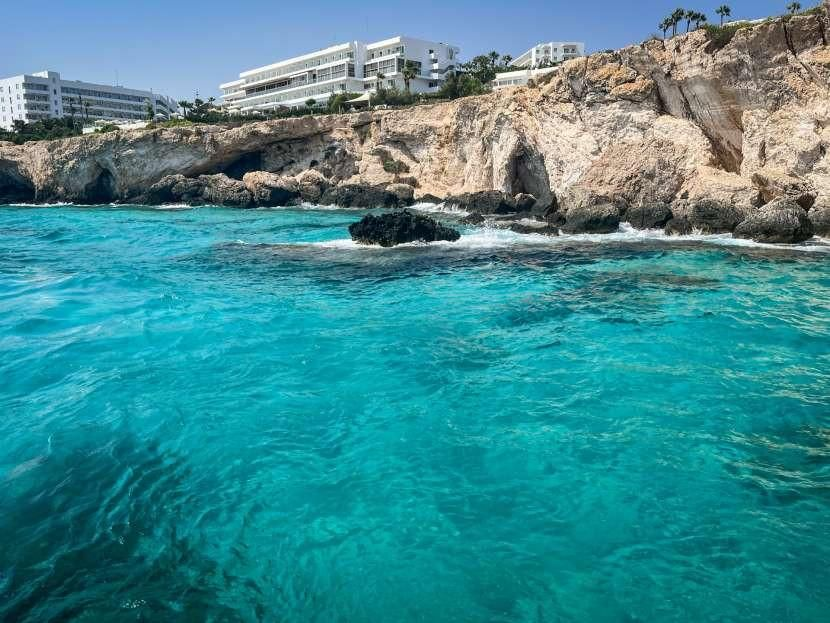
הצוציק האמיץ החליט שהוא לא צריך אפוד הצלה (האמת הילד שוחה מצויין אז הסכמתי), הוא שחה לו לאבן שהצוות הכווין את כולם אליה (הם בעצם עשו לנו סיור שחיה בתוך המערה) אני כמובן שוחה אחריו. הים די גלי (אבל לא גלים גבוהים או מסוכנים). מהאבן קפצנו למים ושחינו לכיוון המערה וישר לתוכה, וכאן הצוציק קיבל התקף פאניקה מטורף, כנראה נבהל מהמערה, נתלה עלי ולא הסכים לשחות הלאה, עד שהגיע בחור חביב מצוות הספינה ושחה איתו יד ביד לתוך המערה, פיצקה בזמן הזה שחתה בכיף שלה לידנו ולא הזיז לה כלום. כשהגחנו מהמערה שחינו ישירות לספינה הצוציק לא הסכים לרדת שוב למים…. פיצקה לעומתו עשתה רונדלים על המגלשה. ואז הקפטן הביא לחם ופיזר במים מה שמשך שפע דגים, כאן אפילו הסרבן הקטן לא עמד בזה, שם אפוד ומשקפת וקפץ לשנרקל (הפחד נעלם).
אחרי כשעה וחצי של שחיה עם דגים במים חזרנו לנמל, פיצקה זכתה ״להשיט״ את הספינה לכמה דקות. משם קפצנו לחנות לקנות מזכרות לחברים. בדרך חזרה עצרנו באגם המלח של לרנקה, בחורף זה אגם של ממש שמושך אליו המוני פלמינגו, בקיץ האגם יבש אבל עדיין מחזה יפה. משם כבר נסענו לוילה לארגן את התיקים ולהנות מלילה אחרון של חופש.
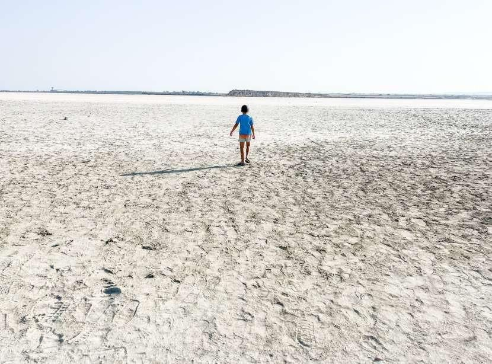
25.8- קמנו בשש וחצי בוקר, הטיסה אמורה להמריא ב-11, בעלי פותח את החדשות בנוהל והופ, מתקפת מנע של ישראל בלבנון, או או… אני כבר מתחילה להסתכל באתר של וויז ונתבג, בינתיים הטיסה מופיעה שיוצאת כרגיל, טוב ממשיכים בתוכנית ויוצאים לתחנת החזרת הרכב, מחנים את הרכב ומגיע הסמס- הטיסה מבוטלת (שעתיים לפני הטיסה), אוי לא, טוב אני מיד נכנסת לקישור לכרטס מועד חדש, יש ב27ֿ.8ֿ, בעלי יצא לברר אם ניתן להאריך את השכרת הרכב, ואני היססתי לשניה ונכנסתי לאתר אל על לבדוק טיסות (הם לא מבטלים)- הטיסה הקרובה רק ב5 לספומבר! מיד חוזרת לאתר וויז לכרטס אלא שכבר אין 27 לאוגוסט יש 28- מיד לוחצת אנטר ומכרטסת. בעלי חוזר עם חדשות טובות שהארכנו את הרכב עד ה27 בעלות של 60 יורו (מונית ללרנקה לכיוון עולה בין 20-30 יורו כך שבמחיר הזה כבר עדיף רכב). כשהוא שמע שכרטסנו ל-28 הלך לנסות להאריך בעוד יום אבל לא ניתן, הרכב מוזמן, טוב נסתדר יום אחד בלי רכב.
בגלל שיש לנו רכב רק ליומיים החלטנו להשאר באיזור לרנקה בלי להתרחק מידי. התחלתי לחפש מקומות לינה, המחירים באיה נאפה ופורטראס היו בשמיים. מצאתי דירה זולה במרכז לרנקה Georgiana Suites, דירת שני חדרים נקיה במרכז לרנקה (די נפלנו עם הדירה, לא קראתי את כל הביקורות ותכלס היא אמנם נקיה והחדרים גדולים אבל, אין סלון, השכונה פח אשפה- רחוק מהמרכז, וצריך רכב, אין באמת מטבח ואי אפשר לבשל שם). יש לנו מלא זמן להעביר עד הצ׳ק אין, התקשרתי לדירה ולא ניתן להיכנס לפני 3.
השעה רק תשע וחצי. החלטנו לבדוק את הקניון של לרנקה, קניון גדול, מלא חנויות אבל בגלל שבאנו רק עם מזוודה אין לנו באמת מקום או צורך בשופינג, הילדים שיחקו בשני משחקי וידיאו וזהו, אין מה לעשות שם. ואז עלה אצלי רעיון מבריק! חוות הגמלים! זה כולה עשרים דקות נסיעה, יש שם בריכה ומסעדה, מושלם להעביר כמה שעות עד הכניסה לדירה. מיד נסענו לשם, ואכן העברנו שם את הזמן עד השעה שתיים וחצי, הצוציקים שכבר הכירו את המקום טיילו להנאתם היכן שבא להם, אנחנו התפנקנו (ממש ירידת מתח) על שפת הבריכה, אכלנו צהריים במסעדה שם שמאוד מותאמת לילדים (הם טוענים שהנאגטס וההמבורגר הכי טעים שאכלו זה שם). לקראת שלוש יצאנו משם, עברנו שוב להצטיידות זריזה בסופר הענק בעיירה קיטי ומשם לדירה.
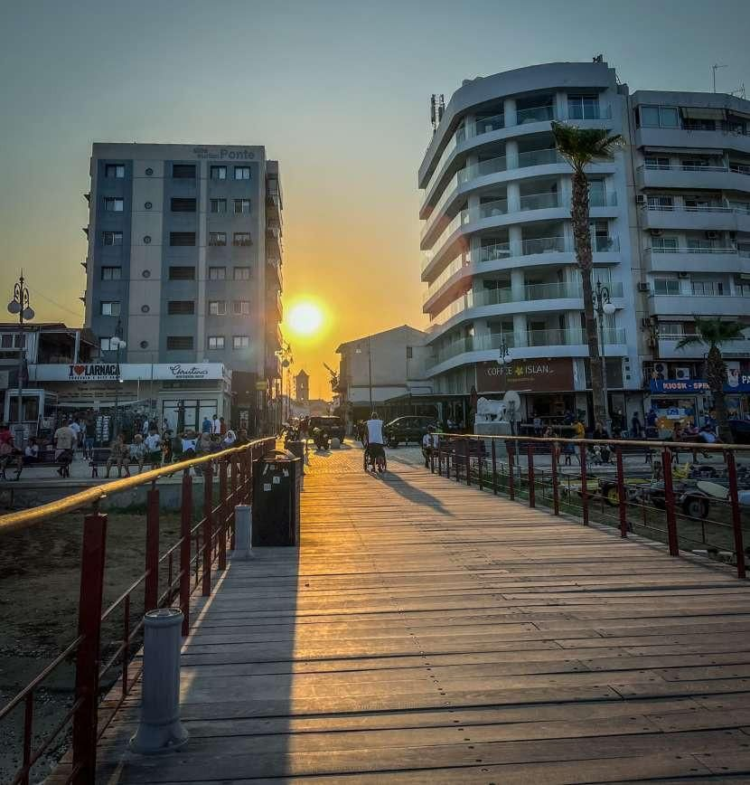
אין לי שום דבר טוב לכתוב על לרנקה, היא נראית כמו אשקלון בשנות ה-80. כמו שכתבתי הדירה היתה במיקום גרוע, לפחות 20 דקות הליכה מהטיילת (לא הגיוני בחום הזה עם הילדים) בשכונה שנראית כמו דרום ת״א (לא במובן המחמיא). אפילו אי אפשר לשבת במרפסת כי מסביב הכל מגעיל. בכל זאת נסענו לטיילת בערב, אם כבר בלרנקה ננצל את הזמן. הטיילת נחמדה, הסתובבנו קצת אכלנו פיצה וחזרנו לדירה.
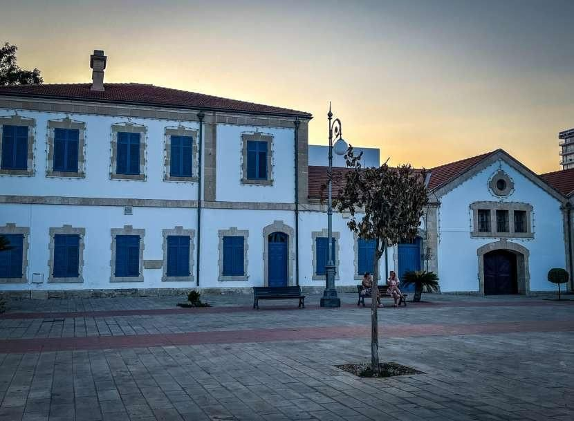
26.8- אם כבר נתקענו ויש לנו רכב החלטנו לבקר גם באיזור של פורטראס. הדירה שלנו לא נעימה מכדי להעביר בה את הבוקר והצהריים, החוף בלרנקה גם ככה מצריך נסיעה עם רכב אז אם כבר נוסעים ניסע לחוף יפה. אחרי 40 דקות נסיע הגענו לחוף עץ התאנה שבפורטראס. מדובר על אחד החופים המפורסמים של קפריסין והאמת בצדק! מים טורקיזיים שקופים ונעימים, החיסרון היחיד שהחוף עמוס מאוד, אז או להגיע מוקדם או מאוחר ואם כבר הגעתם כמונו בצהריים אז המון קרם הגנה ומגבת חוף. במקום יש חניה גדולה ממש סמוך לחוף. העברנו כמה שעות טובות במים, שחינו עד האי שבמים, שנירקלנו השתזפנו. בצהריים אכלנו באחת המסעדות ליד החוף (האוכל לא היה להיט אז אני אפילו לא זוכרת את המסעדה), וקינחנו עם גלידה. אחר הצהריים כבר חזרנו לדירה, לא רצינו לצאת שוב לטיילת אז העברנו את הערב בצפיה בסרטים.
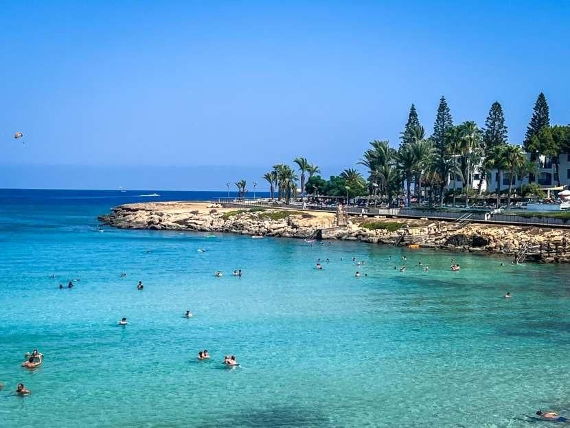
27.8- היום האחרון שלנו (בתקווה שאכן נצליח לחזור מחר). פינינו את הדירה בתשע בבוקר ונסענו להחזיר את הרכב. להיום הזמנו חדר במלון רדיסון בלו, שנמצא לא רחוק מהדירה הנוכחית אבל בכל זאת מדובר במלון 5 כוכבים עם בריכה. מקסימום נשהה בבריכה עד שהחדר יהיה מוכן. למזלנו כנראה ההזמנה של הרכב שתוכננה להיום בוטלה והארכנו את הרכב בעוד יום, וכך חסכנו מונית. מצד שני אם מראש היינו מאריכים ל-3 ימים יתכן והיינו מנצלים את 3 הימים האלה אחרת ובצורה הרבה יותר ״חכמה״. היות ושוב יש לנו רכב חשבנו לנסוע קצת לים, להיות בחוף פרבוליה אבל הילדים דרשו שוב פארק גמלים, וכך חזרנו לשם בפעם ה-3 בטיול הזה.
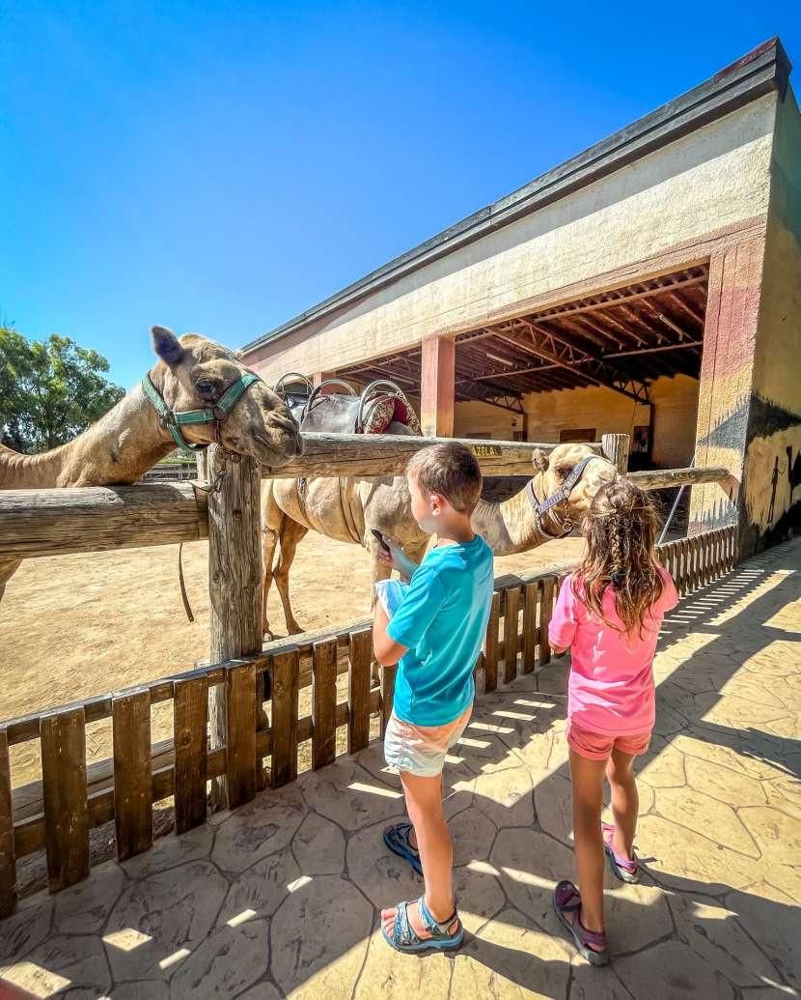
בשעה ארבע הגענו למלון שלנו, קיבלנו חדר מרווח עם 2 מיטות זוגיות ונוחות, מיד לקחנו מגבות ועלינו לבריכה המפנקת של המלון. במקביל עשינו צ׳ק אין לטיסה רק שלפיצקה ובעלי לא ניתן כרטיס עליה למטוס ונכתב שאנחנו צריכים להגיע לדלפק. זהו מחשבות על אובר-בוקינג ונכנסים לחרדות, כשבדקתי הושבה המטוס ראיתי שיש רק מקום אחד שניתן לרכוש, מיד רכשנו כדי שיהיה לנו לפחות 3 מושבים וכך הרי לא ישאירו את פיצקה לבד…כל הערב היינו בחרדות, כבר בדקתי את כל חברות התעופה שטסות לארץ במחירים הזויים של 600 ומעלה דולר לכיוון לאדם! טוב במקרה הכי גרוע אני אטוס עם הילדים והחצי יטוס במחיר מופקע למחרת (ונתחשבן עם החברה אחרכך). בכדי להרגיע אותי ואת עצבי החצי זרם על ארוחת ערב במסעדה יפנית במלון, אני חובבת סושי וגם הצוציק, המסעדה היתה לא רעה כלל ואפילו פיצקה טעמה ונהנתה מהמנה.
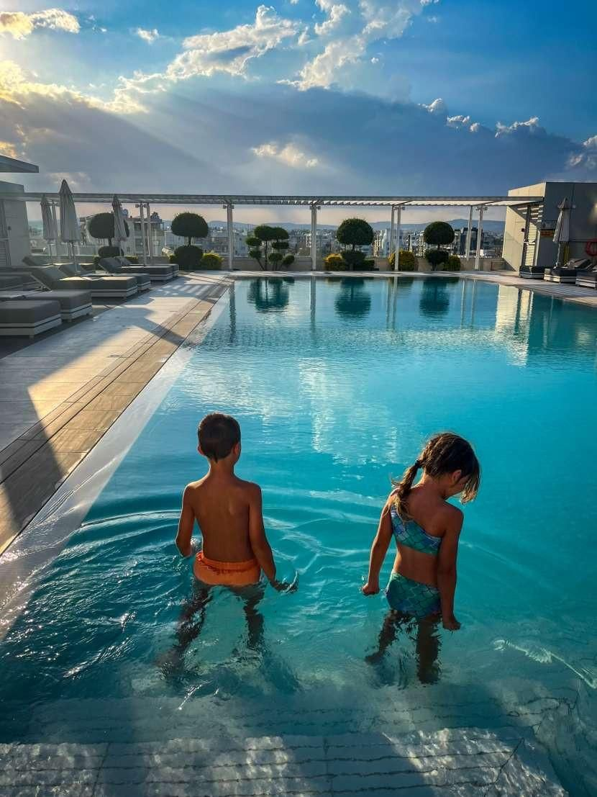
28.8- הטיסה שלנו אמורה לצאת בצהריים מה שהשאיר לי עוד בוקר מלא בחרדות האם נצליח לחזור או לא. אחרי ארוחת בוקר לא רעה בכלל, ירדנו לבריכה להעביר את הזמן עד העזיבה, שם גילינו עוד כמה משפחות ישראליות שנתקעו ומחכים לטיסה היום. נרגעתי רק כשראיתי שוויז עדיין מוכרים כרטיסים לטיסה שלנו היום, משמע אין אובר בוקינג ואבן נגולה מליבי. בשעה 11 עזבנו את המלון ונסענו להחזיר את הרכב. בשעה טובה הסתדר עניין הכרטיסים וחזרנו בשלום הביתה.
לסיכום,
קפריסין זה לא יוון, יותר כמו אילת. האוכל לא טעים וממש יקר. הים בצד של פאפוס ולרנקה בדיוק כמו הים אצלנו (אפילו לא מתחרים בחוף פלמחים). את איזור איה נאפה ופרוטראס אהבנו יותר- החופים הרבה יותר יפים כך שפעם הבאה ניסע לשם. הטורודוס מקסים, כדאי להגיע לכמה ימים כי יש המון מה לראות ואיפה לטייל (גם בקיץ).
מצד שני במצב הנוכחי של המלחמה זו היתה הפוגה מעולה לילדים שזכו לטייל ולבלות כל יום בים ובבריכה ולחוות חופש כמו שצריך.
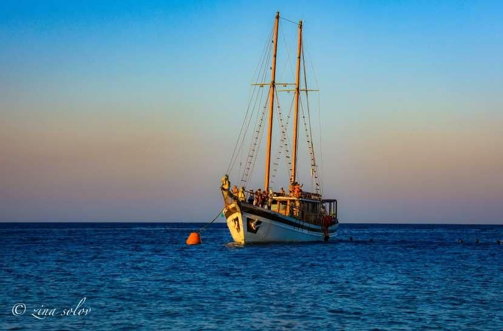